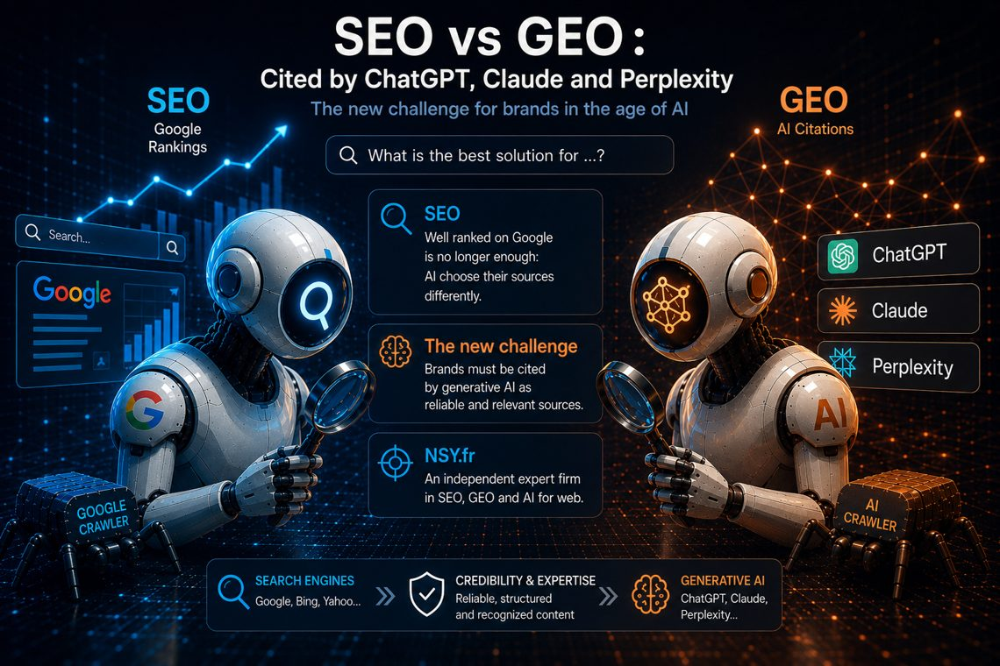

SEO vs GEO: getting cited by ChatGPT,
Claude and Perplexity
Ranking well on Google is no longer enough. A growing share of searches happens inside an AI assistant — which does not return ten blue links but one answer, backed by a handful of chosen sources. If your site is not among them, you do not exist in the conversation. Here is how it works, and what we concretely put in place on this site.

SEO and GEO: two different logics
SEO (Search Engine Optimization) targets rankings in a results page: positions, earned through relevance, technique and popularity.
GEO (Generative Engine Optimization — also called LLMO) targets something else: being understood, retained and cited by a generative engine — ChatGPT, Claude, Gemini, Perplexity, Copilot. An assistant does not rank ten links: it synthesises an answer and attributes a few sources. The competition is no longer about position — it is about attribution.
| SEO (Google, Bing) | GEO (AI assistants) | |
|---|---|---|
| Unit of success | A position in the results | A citation in the answer |
| What gets read | The page, its links, its signals | Facts attributable to a named entity |
| Winning format | Complete content, internal links, backlinks | Dated, sourced, cross-checkable facts; Q&A |
| Pace | Continuous | Search modes: days/weeks · base models: months |
How an assistant picks its sources
- Being able to read. Every AI vendor runs crawlers (GPTBot, ClaudeBot, PerplexityBot, Google-Extended…). Block them — on purpose or through an overzealous firewall — and you drop out of the corpus.
- Being able to attribute. A model cites what it can attach to a clear entity: a name, an activity, dated facts, a stable URL. A "pretty but vague" site is unusable to it.
- Being able to cross-check. A fact that lives on a single page carries little weight. The same fact on the site, an official register and a LinkedIn profile becomes citable.
What we put in place on nsy.fr
This site doubles as a test bench — every point is verifiable:
- An explicit AI-crawler allowlist in
robots.txt: GPTBot, OAI-SearchBot, ClaudeBot, Claude-SearchBot, PerplexityBot, Google-Extended, CCBot, Amazonbot, Applebot-Extended, MistralAI-User… Not blocking them "out of caution" keeps you in the corpora. llms.txtandllms-full.txtat the root: identity, offerings, service area and a graph of facts in short sentences — the format models digest best.- A JSON-LD entity graph (Organization, Person, Service, FAQPage…) with stable identifiers, the company registration number and official profiles as
sameAs: the "NSY" entity becomes cross-checkable. - A conversational FAQ of fifty-plus questions phrased the way people ask an assistant.
- Absolute dates ("founded in 2018", "since 2012"): a model cannot do anything with a "for 14 years" that expires.
Observable result: within the first week online, the server logs show ClaudeBot (Anthropic) reading robots.txt then the sitemap several times a day, alongside Googlebot, Bingbot, Applebot and Amazonbot. The ingestion machinery is running — attribution itself builds over weeks.
What to take away for your own site
- Check your
robots.txt: are AI crawlers allowed? - Publish an
llms.txt: identity, offerings, dated facts, key pages. - Structure the entity in JSON-LD, linked to your official profiles.
- Add a real Q&A page — one an assistant can quote as-is.
- Cross-check: the same facts on your site, your registers, your networks.
- Measure: server logs (crawler visits), then direct tests in the assistants’ search modes.
The limits, honestly
There is no dashboard for "how many times ChatGPT cited me". The assistants’ search modes reflect the web within days or weeks; base models only absorb new players across retraining cycles — months. GEO is a long-distance race: what matters is being readable, attributable and cross-checkable before the other players in your niche.
This is exactly what we industrialise for our clients — our AI-powered website creation bakes this GEO setup in from day one. A project, a question? Let’s talk — reply within 48 business hours.